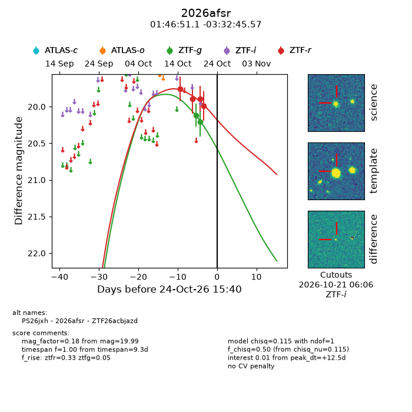
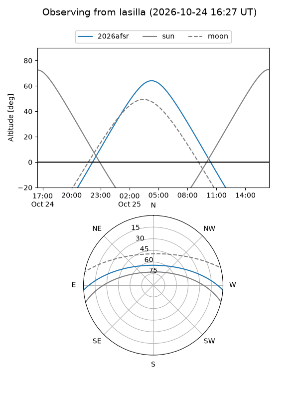
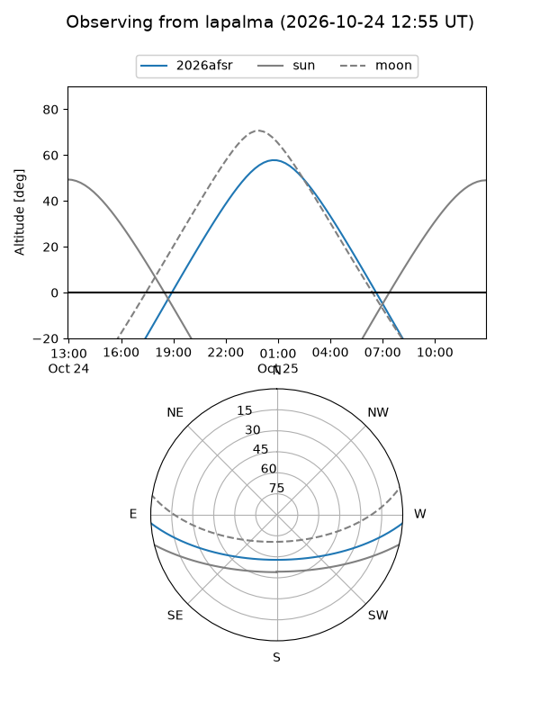
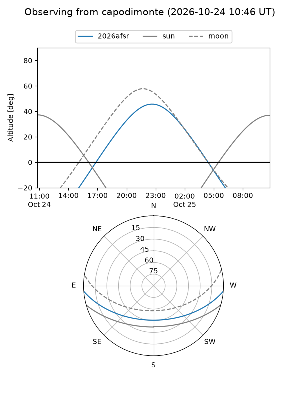
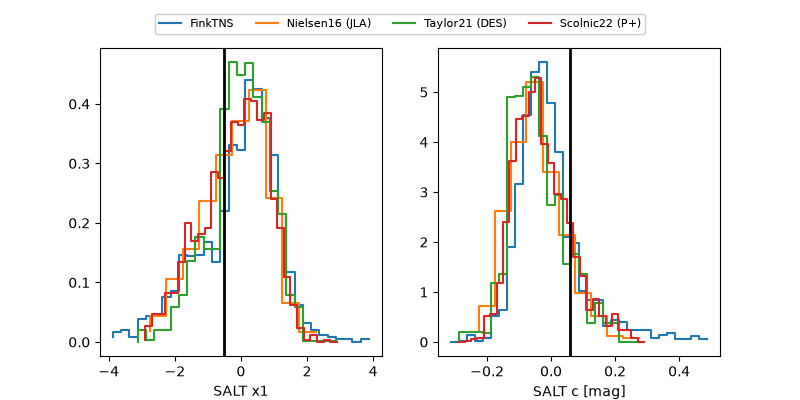

2026afsr
Target 2026afsr at 2026-10-25 03:36
Aliases and brokers:
FINK-ZTF: ztf.fink-portal.org/ZTF26acbjazd
Lasair-ZTF: lasair-ztf.lsst.ac.uk/objects/ZTF26acbjazd
ALeRCE-ZTF: alerce.online/object/ZTF26acbjazd
YSE-PZ: ziggy.ucolick.org/yse/transient_detail/2026afsr
TNS name: wis-tns.org/object/2026afsr
Direct TNS query: direct search
alt names
ZTF26acbjazd (ztf,fink_ztf)
2026afsr (tns,yse)
PS26jxh (panstarrs)
Coordinates:
equatorial (ra, dec) = 26.7131,-3.54599
equatorial (HMS+DMS) = 01:46:51.13,-03:32:45.57
galactic (l, b) = (154.6399,-62.95468)
Flags:
peak dt: +12.9
Photometry:
last ztfg=20.21, ztfr=19.99
2 ztfg, 4 ztfr detections
Lightcurve

Visibility



Additional plots
